Para este juego necesitamos a nuestro personaje principal, el tiburón. Estará abriendo y cerrando la boca
continuamente con lo que tendrá varios disfraces, y uno más para cuando muera.
Tendremos también peces que se irá comiendo el tiburón para sumar puntos.
La basura es la que nos quitara la salud.
La barra de salud que irá disminuyendo cada vez que la basura nos toque.
El texto de juego terminado.
La pantalla resumen de puntuación y récords.
Un objeto que tendrá dos disfraces. Una pantalla negra que aparecerá cuando demos al botón de jugar y que se
desvanecerá antes de que comience el juego y una pantalla roja que aparecerá cuando el tiburón se coma la
basura.
Un botón "Play" para comenzar el juego.
Y una introducción al juego.
Usaremos dos escenarios que serán, el de inicio, donde pondremos el botón de iniciar el juego y el del juego.
Para descargar los objetos necesarios para el juego, lo haremos desde este link. Es un archivo comprimido con 7 objetos y 2 escenarios. Lo descargaremos y lo descomprimimos en el directorio del alumno.
El juego consiste en que tenemos el tiburón, que solo se podrá mover arriba y abajo, se tiene que comer los
peces y tendrá que esquivar la basura.
Empezamos por colocar los escenarios y programar en ellos que "Al Hacer Clic En La Bandera" mandaremos el
mensaje "Jugar" para empezar el juego.
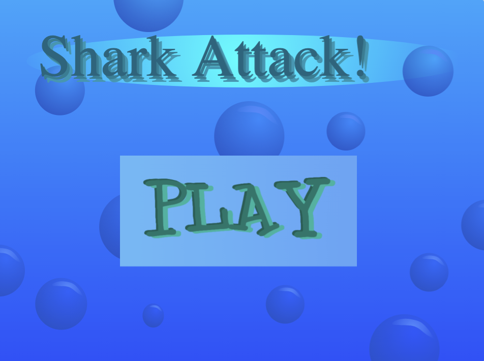
Es turno del tiburón. Empezaremos programando que al recibir el mensaje "Jugar", cambiamos el fondo al del
"Juego" y fijamos el tamaño del tiburón al "50%" para que quepa bien en la pantalla.
Le colocaremos en el centro de la parte izquierda de la pantalla, apuntaremos a la derecha y lo mostraremos.
Finalmente haremos un bucle continuo para dar al valor "Y" del tiburón, el valor "Y" de la posición del
ratón, ya que solo podremos moverlo en el eje "Y".
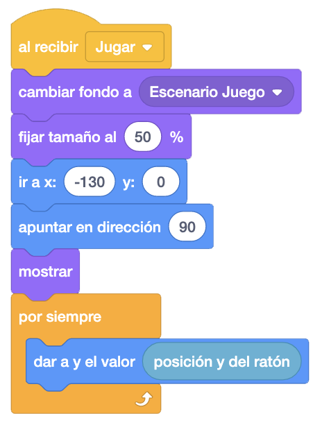
Ahora haremos otro bloque que al recibir el mensaje "Jugar", vaya cambiando de disfraz entre los disfraces 2, 3, 4 y 5. Podemos hacerlo de muchas formas. Esta es una de ellas.
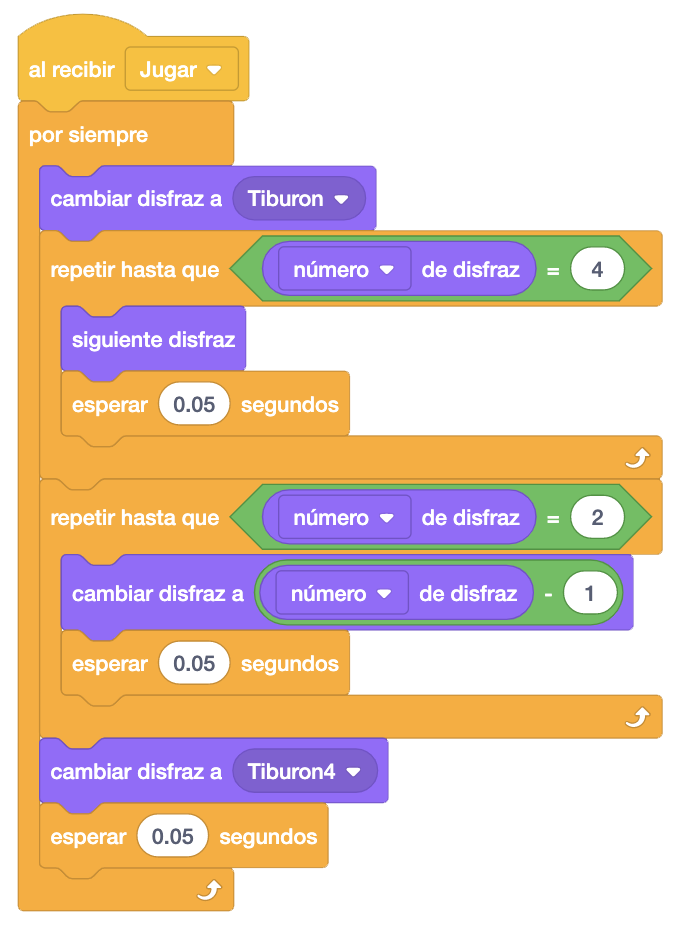
Ahora les toca a los peces que se tendrá que comer el tiburón para ir ganando puntos. Al recibir el mensaje "Jugar", esconderemos el pez y haremos un bucle para ir creando clones cada cierto tiempo.

Al comenzar cada clon, le pondremos un disfraz aleatorio al pez, fijaremos el tamaño al 30%, le pondremos en
la derecha de la pantalla, pero en una posición aleatoria del eje "Y".
Mostraremos el pez y lo moveremos hacia la izquierda. Al llegar al final, eliminaremos el clon.
Al mover el pez, controlaremos si estamos tocando el color de los dientes, por ejemplo, para comérselo,
escondiendo el pez, reproduciendo un sonido, sumando un punto y eliminando el clon.
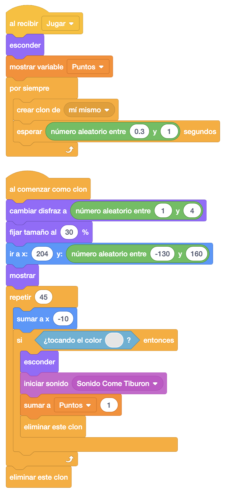
Programaremos ahora la basura que, si le da al tiburón, le irá quitando vida. Al recibir el mensaje "Jugar", escondemos el objeto original, y haremos un bucle, creando un clon cada cierto tiempo y poniéndole un disfraz de forma aleatoria.
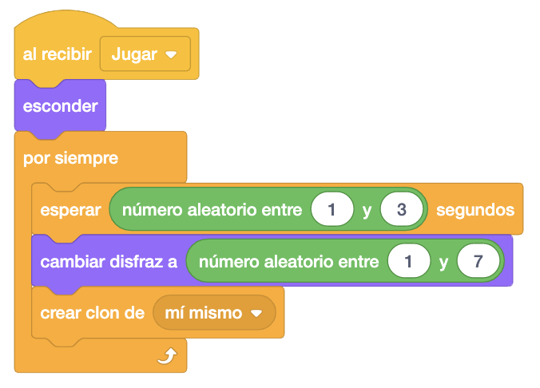
Vamos a mover estos objetos. "Al Comenzar Como Clon", vamos a controlar primero si el disfraz que tiene el objeto es el del ancla para hacerlo caer de arriba a abajo. Si no, lo colocamos a la derecha y aleatoriamente, lo movemos con una inclinación hacia arriba o hacia abajo, girando sobre sí mismo.
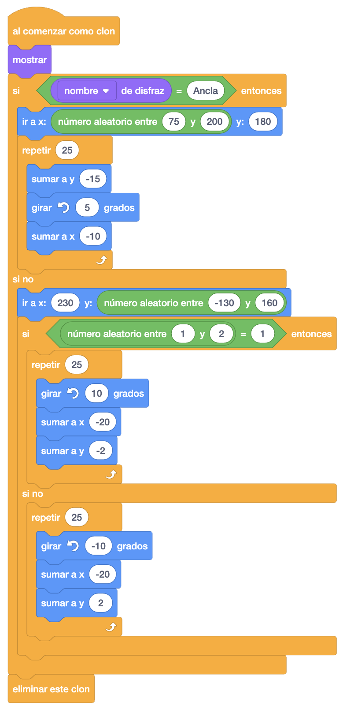
Ahora, a la hora de quitar salud del tiburón, vamos a diferenciar entre sí es el ancla (disfraz número 1) o
es el resto. Si es el ancla, esperaremos a que toque al tiburón y si lo toca mandaremos un nuevo mensaje
"Menos Salud" que más adelante programaremos en el objeto "Salud".
Si es cualquier otro disfraz, esperaremos a que toque al tiburón y el color de los dientes, y si los toca,
mandaremos el mensaje "Menos Salud".
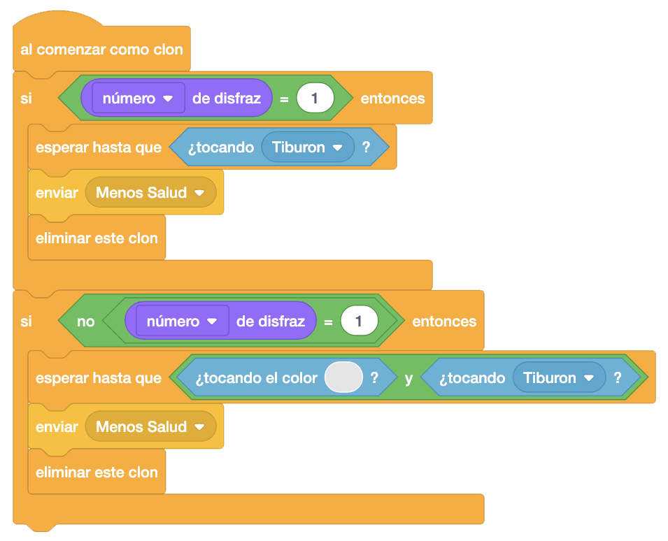
Ahora le toca al objeto "Salud", que al recibir el mensaje "Jugar", le mandaremos a la capa delantera,
pondremos el primer disfraz, y lo mostraremos.
También esperaremos hasta que tenga el último disfraz para enviar un nuevo mensaje "Tiburón Muerto" que
programaremos en la mayoría de los objetos.
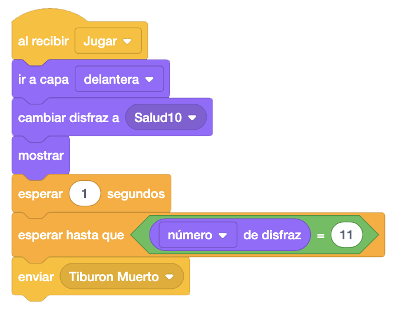
Ahora al recibir el mensaje "Menos Salud", cambiaremos al siguiente disfraz y al recibir "Tiburón Muerto", esconderemos el objeto.
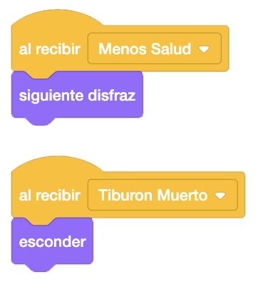
Volvemos al objeto "Peces" para programar que al recibir el mensaje "Tiburón Muerto" detengamos otros programas del objeto y eliminaremos el clon. Lo mismo haremos en el objeto "Basura".
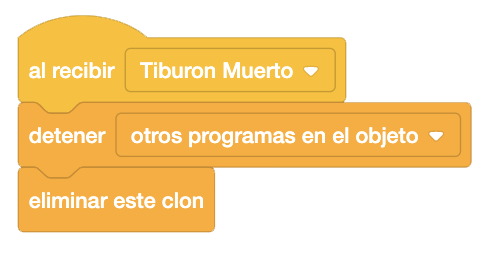
Programaremos ahora este mensaje "Tiburón Muerto" en el "Tiburón". Detendremos todos los sonidos y haremos el
sonido del "Tiburón Muerto".
Cambiaremos el disfraz al de "Tiburón Muerto" y detendremos otros programas del objeto.
Ahora lo moveremos hacia abajo. Primero lo deslizaremos un poco, y luego haremos un bucle para seguir
cayendo, girando sobre sí mismo. Al finalizar enviaremos el mensaje "Mostrar Texto" para mostrar el mensaje
final.
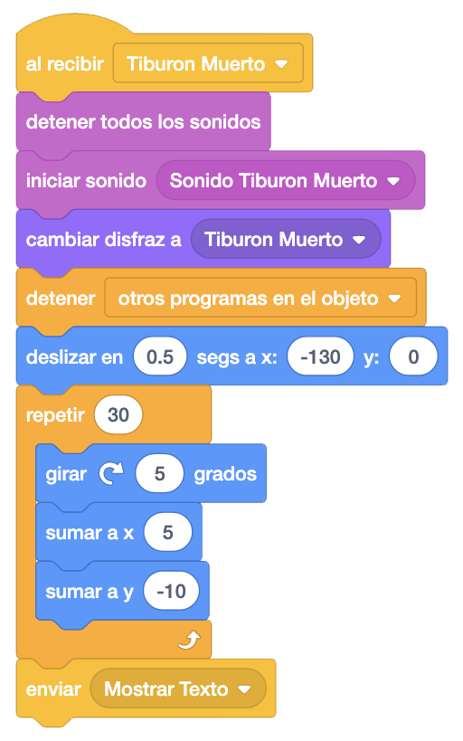
En el objeto "Texto", pondremos el primer disfraz, lo posicionaremos en el centro de la pantalla, fijaremos
el tamaño al 70% para que se vea bien y le daremos el efecto desvanecer al 100% para que no se vea y lo
mostraremos.
Esperaremos un segundo y haremos un bucle para que poco a poco vaya apareciendo. Esperaremos otro segundo y
cambiaremos al segundo disfraz.
Finalmente esperaremos hasta que se pulse la tecla "Espacio" y al pulsar la tecla, lo esconderemos y
mandaremos un nuevo mensaje "Resultados" donde mostraremos la puntuación.
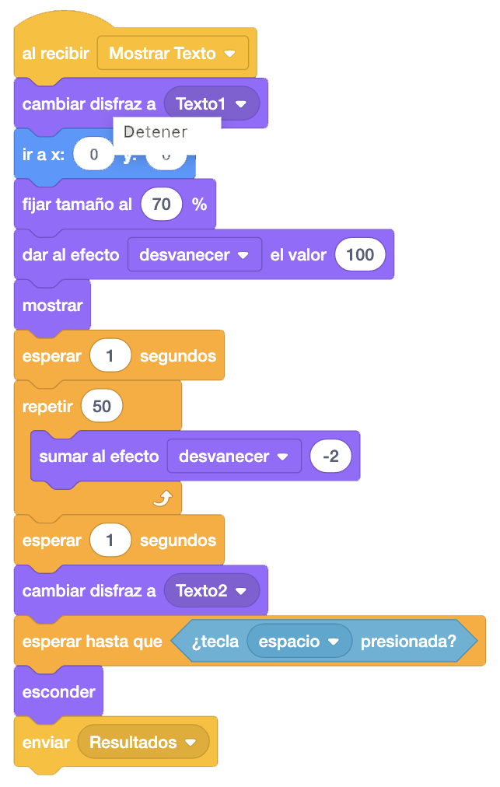
Vamos añadir un objeto para que cuando nos alcance basura, haga un efecto de daño. Para ello, añadiremos el
objeto "Escenas". Al recibir el mensaje "Menos Salud", iniciaremos el sonido "Sonido Tiburón
Alcanzado", pondremos el disfraz "Tiburón Alcanzado", le daremos el efecto "Desvanecer" al 100% para que esté
totalmente desvanecido y lo mostramos.
Después lo hacemos aparecer poco a poco y lo volvemos a desvanecer poco a poco. Finalmente lo escondemos.
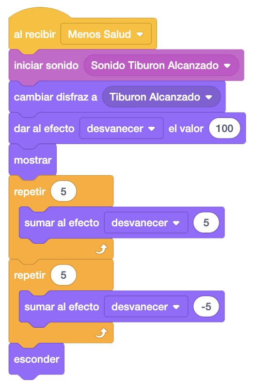
Vamos a terminar con la introducción al juego. Vamos a volver al escenario y cambiaremos el mensaje "Jugar" por el mensaje "Empieza Juego".
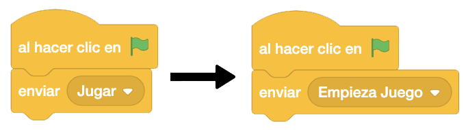
Vamos programar el mensaje "Empieza Juego" en los objetos que lo necesiten.
En el tiburón, pondremos a cero la variable "Puntos", esconderemos todas las variables, lo colocaremos en la
parte izquierda de la pantalla, apuntaremos a la derecha y lo esconderemos.
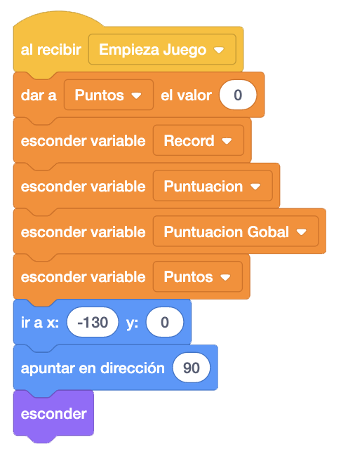
En los peces, en la basura, en el texto y en los resultados, únicamente esconderemos el objeto.
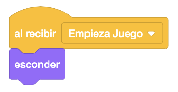
En la salud, esconderemos el objeto, pondremos el disfraz de la salud completa y lo colocaremos en la posición inferior derecha.
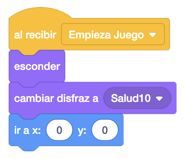
Ahora es el momento de programar el objeto "Intro". Al recibir el mensaje "Empieza Juego", quitaremos todos
los efectos del objeto y fijaremos el tamaño al 150% para que ocupe toda la pantalla.
Lo llevaremos a la capa delantera, lo colocaremos en el centro de la pantalla y lo mostraremos.
Ahora haremos un bucle para ir cambiando de disfraz e ir dando poco a poco el efecto "Ghost", para finalmente
esconderlo.
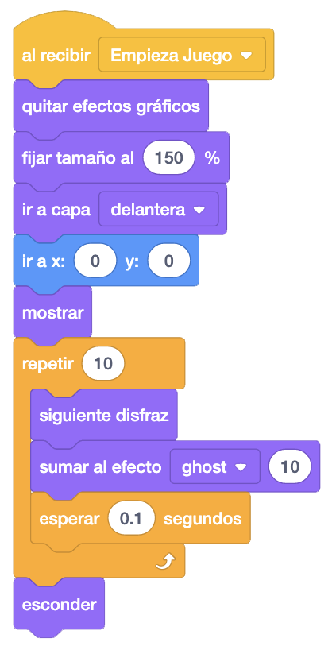
Añadiremos el objeto "Botón Jugar" para empezar el juego. Esconderemos el botón, cambiaremos el escenario al
"Escenario Inicio" y quitaremos los efectos gráficos.
Después colocaremos el botón en el centro de la pantalla y esperaremos 1 segundo antes de mostrarlo.
Ahora vamos a hacer que el botón aparezca. Para ello crearemos un nuevo bloque al que llamaremos "Botón" y lo
llamaremos al final.
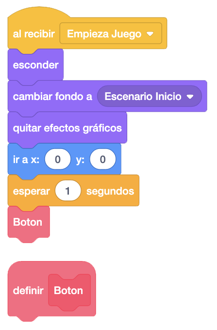
En el bloque "Botón" haremos aparecer el botón de jugar. Crearemos una variable a la que llamaremos
"Velocidad Botón" y le daremos el valor 30. Lo posicionaremos en el centro, pero en el eje "Y" lo pondremos
por debajo de la pantalla y lo mostraremos.
Para hacer que aparezca, repetiremos 15 veces que vaya subiendo lo que indique la variable "Velocidad Botón"
y vamos sumando "-2" a esa velocidad. Al final del bucle, la variable "Velocidad Botón" tendrá el valor "0".
Ya lo tenemos arriba. Ahora vamos a bajarlo un poco, como si se hubiera pasado al subir. Repetiremos 8 veces
que vaya bajando lo que indique la variable "Velocidad Botón" y vamos sumando "-2" a esa velocidad. La
variable irá teniendo valores negativos y por eso bajará.
Ahora lo dejaremos como flotando. Para ello, haremos en un bucle por siempre, que suba y baje.
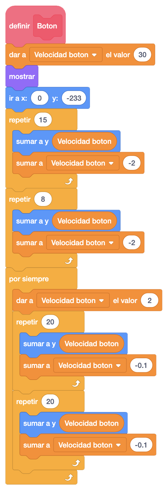
Vamos a hacer un efecto de brillo sobre el botón cuando pasemos por encima. Para ello, al recibir el mensaje "Empieza Juego", repetiremos hasta que pulsemos el botón, que, si pasamos el ratón por encima, daremos el efecto brillo al 100% y si no, quitamos el efecto.
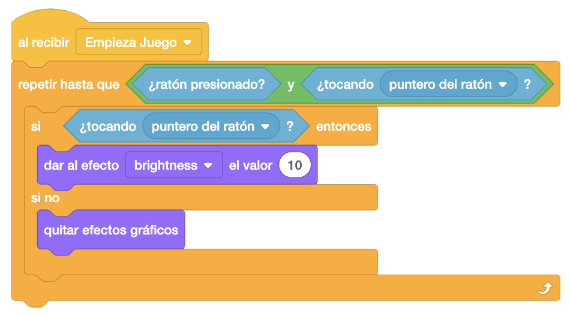
Al hacer clic en el botón, quitaremos un poco de brillo y esperaremos un poco antes de enviar un nuevo
mensaje "Desvanecer" que después programaremos en el objeto "Escenas".
Quitaremos los efectos gráficos, esconderemos el botón y detendremos todos los programas del objeto.
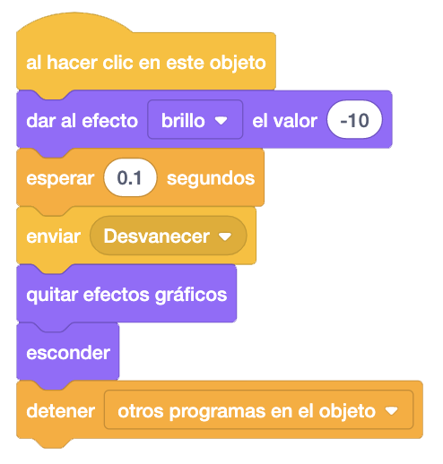
Terminaremos programando en el objeto "Escenas" que cuando recibamos el mensaje "Desvanecer", pondremos el
disfraz "Negro", Daremos el efecto "Ghost" al 100%, lo mandamos a la capa delantera, lo posicionamos en el
centro de la pantalla y lo mostramos.
Después haremos un bucle para ir quitando el efecto desvanecer y posteriormente enviamos el mensaje "Jugar".
Cambiamos el fondo al "Escenario Juego" y volveremos a hacer otro bucle para ir poniendo el efecto
"Desvanecer". Finalmente lo escondemos.
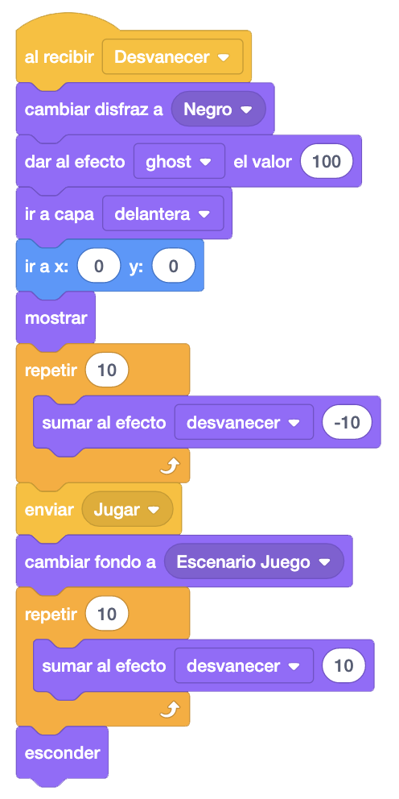
Acabaremos el juego poniéndole una música. En el escenario, programaremos que al recibir el mensaje "Jugar" haremos sonar la música del juego.
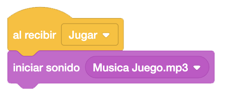
Otro reto que podemos añadir es que según vayamos obteniendo puntos, la basura, los peces o ambos vayan más rápido.
Y el juego quedaría así.

Para ver el juego terminado pulsa
aquí.
Para descargarte el juego terminado pulsa
aquí.